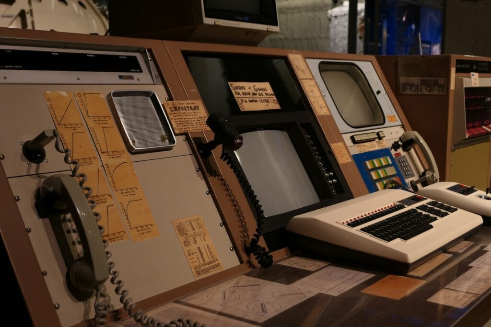
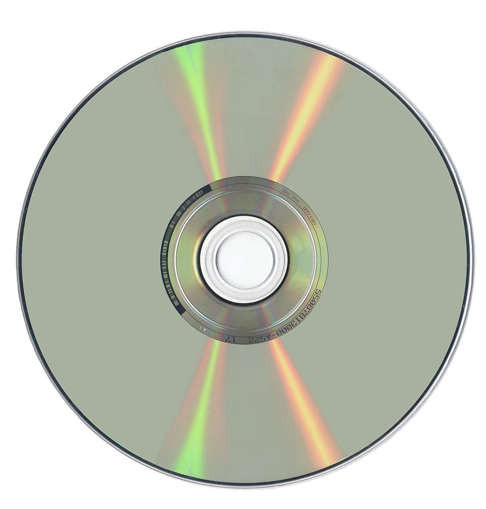
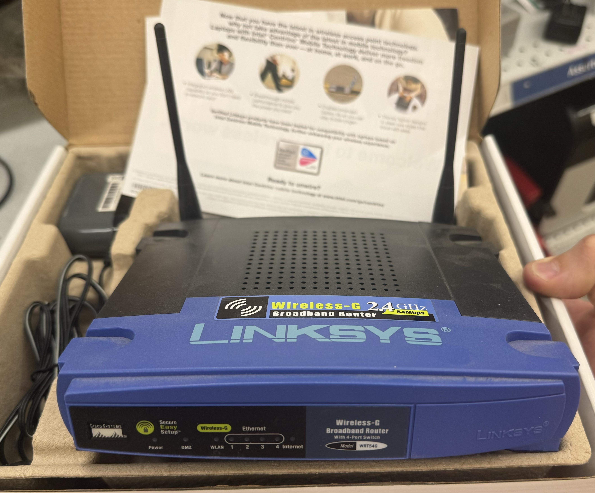

◆ The Connected World ◆
The World Wide Web shrank the planet. Email replaced letters. Search engines organized human knowledge. The dot-com boom brought millions online — and crashed just as fast. The age of connection had begun.
The Internet Age
The 1990s was defined by one invention above all others — the World Wide Web. Tim Berners-Lee's creation turned the Internet from a tool used by scientists and governments into a public network that anyone could access with a home computer and a phone line.
By the mid-1990s, browsers like Netscape Navigator made the Web accessible to ordinary users. Companies rushed to create websites, email became a standard form of communication, and the dot-com bubble inflated as investors poured money into any business with ".com" in its name.
World Wide Web (1991) — Tim Berners-Lee makes the Web publicly available. Within 5 years, millions of websites exist.
Windows 95 (1995) — Microsoft's landmark OS introduced the Start button, taskbar, and plug-and-play hardware support.
Google (1998) — Founded in a Stanford dorm room, Google's PageRank algorithm changed how we find information.
DVD (1995) — Digital Versatile Disc replaced VHS tapes for video and offered 4.7GB of storage per disc.
Key Events
Technology of the 1990s


